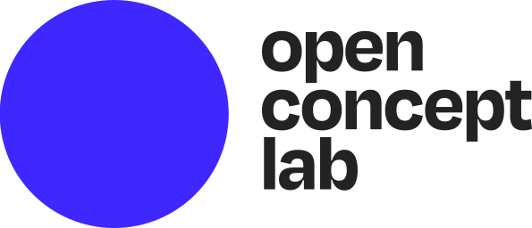
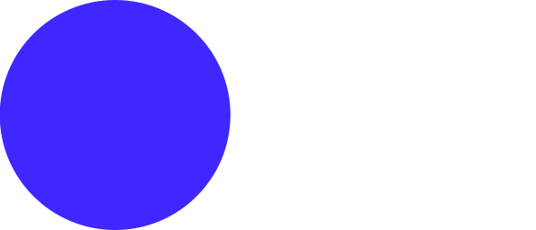
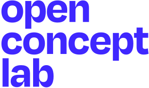

Logo & brand
The OCL logo comes in three shapes — full logo, icon, and text-stacked — with color variants for light and dark backgrounds. Use the SVG versions for anything rendered in a browser or on a digital screen; reach for PNG only when a tool can't accept SVG. EPS and PDF masters live in the shared Drive.
assets/logo/. Rendered
variants below are live from those files — right-click any logo to save a copy, or use the format buttons
underneath each card.
Full logo
The primary lockup — icon plus wordmark. Use this wherever space allows: site headers, documents, slide decks, email signatures. Choose black text on light backgrounds, white text on dark.

{kind=link}
{kind=link}

{kind=link}
{kind=link}
Icon
Standalone icon. Use for favicons, app icons, avatar placeholders, and any UI where the full wordmark wouldn't fit. The blue variant is the primary; white is for dark or primary-colored backgrounds.
{kind=link}
{kind=link}

{kind=link}
{kind=link}
Text stacked
Wordmark-first variant with the icon above the text. Use when you need a squarer footprint than the full logo allows — e.g. social avatars, square cards, mobile splash screens.
{kind=link}

{kind=link}
{kind=link}
{kind=link}
{kind=link}
Clear space & minimum size
Don't
Branding examples
The full branding examples deck with usage scenarios, co-branding patterns, and historical context is available as a PDF in this repo:
Source files
The EPS masters and Google Drawings source files live in the shared Drive at
OCL/OCL Shared/Branding/Logo/. If you need a new variant (color, orientation, or lockup),
edit the master there and then export updated SVG/PNG into assets/logo/
in this repo.
Full logo/— icon + wordmark lockupIcon/— standalone iconText stacked/— icon above wordmarkOCL Branding Examples.gslides— usage examples deckOCL Logo with everything.gdraw— master in Google DrawingsOCL-CIEL Combined.gdraw— OCL + CIEL co-branding